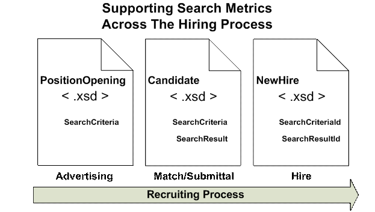
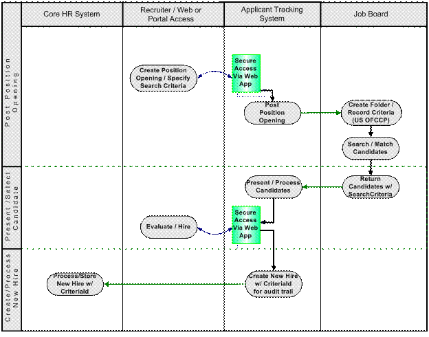
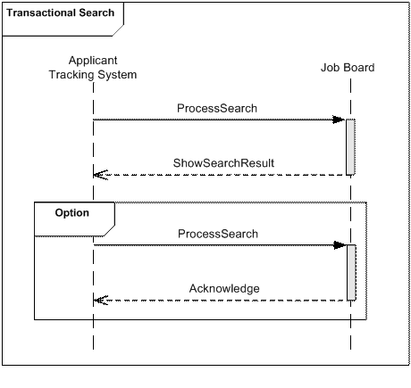
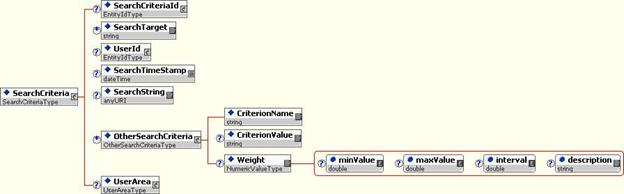
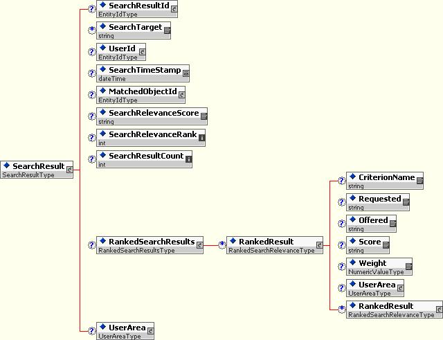

Search Types
Recommendation, 2007 April 15
Editors:
Chuck Allen, HR-XML Consortium
Contributors:
Andrew Consolo, ResumeMirror; Jon Lehto, Monster; Romuald Restout, Humanuo; Ingolf Teetz, milch und zucker
Copyright statement © 2007 HR-XML Consortium, Inc.
Abstract
This specification defines two data types intended as generalized, reusable components for structuring information about search criteria as well as search-result metadata, including result relevance.
These data types may be suitable for a variety of use cases involving the exchange of search criteria and search result metadata. Principal use cases considered in the development of this specification involved recruiting and staffing. One of the use cases considered relates to the U.S. Office of Federal Contract Compliance Programs (U.S. OFCCP) recruiting record keeping requirements for U.S. federal contractors. Those requirements mandate that contractors keep a record of positions for which searches of external candidate databases were conducted, and for each search, "the substantive search criteria used." The SearchCriteria data type may be useful for communicating the substantive search criteria from a job board to a recruiting or “system of record” for OFCCP compliance.
Table of Contents
2.2 Passing Search Metrics Through the Recruiting Supply Chain
2.2.1 SearchTypes Within PositionOpening, Candidate, and NewHire Schemas
2.3 U.S. Office of Federal Contracts Compliance Programs Regulations
2.4 Transactional Searches Launched from Partner Systems
4 Implementation Considerations
4.2 Special Characters and CDATA
4.3.1 SearchCriteria, Example 1
4.3.2 SearchCriteria, Example 2
5 Appendix A - Document Version History
6 Appendix B – Related Documents
1 Overview
Recruiting and other HR processes can involve searches against external databases. This specification defines two data types intended for use in exchanging search criteria, search results, and related metadata.
The two data types are intended as simple, generalized components that can be reused within other HR-XML specifications. The data types also might be used on their own for structuring the exchange of search data and metadata between systems.
1.1 Design Scope
Search becomes an integration issue when there is the need to exchange search criteria or search results between two or more trading-partner systems.
One of the requirements driving interest within HR-XML’s Recruiting and Staffing workgroup in creating the SearchTypes schema was the U.S. Office of Federal Contract Compliance Programs (OFCCP) record keeping requirements for U.S. federal contactors. The SearchCriteriaType defined by this specification is intended as a “building block” that contractors and their solution providers may find useful in creating OFCCP-compliant solutions.
1.1.1 Outside of Scope
There are a number of items explicitly outside of the design scope considered by this specification:
- Direct interactions with search engines. Many common interactions with search engines do not require the data exchange supported by this specification. For instance, a user’s direct interactions with a search engine via a browser typically would be accomplished without the system-to-system transfer of search metadata contemplated by this specification.
- Search and matching algorithms. This specification focuses on the exchange of search metadata and does not address nor depend upon any particular search engine or matching technology or algorithm. The data types defined by this specification are intended to be sufficiently flexible to structure search metadata for many different types of search platforms and technology.
- Markup/Standards for Search and Logical Operators. This specification makes no attempt to standardize or describe logical operators used in search and matching operations. The specific operator characters and strings required or expected by search or matching engine may vary. It is expected that searches would contain the operator characters and strings appropriate for the target search engine. See 4.2, Special Characters and CDATA.
- U.S. OFCCP compliance. As explained above, U.S. OFCCP record keeping requirements were considered in the design of the SearchTypes Specification. The HR-XML Recruiting Workgroup designed the SearchTypes Specification to provide an important building block for arms-length trading partners to use in creating the audit trail required by U.S. OFCCP regulations. However, this specification provides a very brief and partial description of the U.S. OFCCP record keeping requirements. It makes no attempt to fully explain the obligations of U.S. federal contractors nor does it attempt to provide a complete U.S. OFCCP compliance solution. Those subject to the U.S. OFCCP regulations should seek competent legal counsel for advice on their obligations under those regulations.
1.2 Major Components
The two major components defined within the SearchTypes schema are:
- SearchCriteriaType is intended to support the exchange of the criteria used as input for search or matching operations against a database or other data store. In some use cases, this component would be used prospectively to send the criteria to be applied in a search. In other use cases, it might be used to exchange search-criteria history – in other words, a record of the criteria that was used in a search that has already been executed.
- SearchResultType is intended to support the exchange of “search relevance metadata” or in other words, the extent to which search results matched the input criteria for the particular search.
See Section 3, Schema Design, for illustration and description of each of these data types.
2 Use Cases
2.1 Overview
The requirements driving the development of the SearchTypes schema arose out of three use cases:
- Section 2.2, Passing Search Metrics Through the Recruiting Supply Chain
- Section 2.3, U.S. Office of Federal Contracts Compliance Programs Regulations
- Section 2.4, Transactional Searches Launched from Partner Systems
These should be regarded as only a few of many possible use cases.
2.2 Passing Search Metrics Through the Recruiting Supply Chain
One of the use cases driving the development of the SearchTypes schema was the desire to track throughout the entire recruiting supply chain the criteria used to source a candidate. For a decision-maker removed from actually executing the search, such information helps answer the question “why was this candidate submitted for my consideration?” The decision maker might use the search criteria and corresponding result relevance data to refine candidate search criteria or to measure the effectiveness of different staffing sources.
2.2.1 SearchTypes Within PositionOpening, Candidate, and NewHire Schemas
Together, HR-XML’s PositionOpening, Candidate, and NewHire schemas provide a nearly end-to-end solution for recruiting data interchange between trading partner systems. The details of these schemas are provided in the separate documentation for Staffing Exchange Protocol and the New Hire specifications (see Appendix B – Related Documents).
To enable the end-to-end tracking of search metadata through the recruiting process, the SearchCriteriaType and SearchResultType (instantiated as SearchCriteria and SearchResult elements) have been incorporated within the PositionOpening, Candidate, and NewHire schemas. Figure 1, provides a high-level view of how these schemas can fit into an end-to-end recruiting process. The placement of the SearchCriteria and SearchCriteriaResult elements within the schemas is explained below:
PositionOpening is the schema within HR-XML’s
Staffing Exchange Protocol designed for the communication of “job
postings” (position advertisements) to job boards and other advertising
media. SearchCriteria has been added as an optional element within the
PositionDetail node:
PositionOpening/PositionProfile/PositionDetail/SearchCriteria
A possible use of the SearchCriteria within PositionOpening might to be
for a recruiter or HR manager to explicitly communicate the search criteria
that a trading partner should apply in conducting a candidate search.
Candidate is the schema within HR-XML’s
Staffing Exchange Protocol designed for the communication of a prospective
employee or applicant from a candidate source (e.g., a job board or recruiting
site) to an applicant tracking or recruiting system. Optional SearchCriteria
and SearchResult elements have been added to the optional and repeatable
PositionPosting node:
Candidate/RelatedPositionPostings/PositionPosting/SearchCriteria
Candidate/RelatedPositionPostings/PositionPosting/SearchResult
NewHire is a schema designed to support the
transmission of data from an applicant tracking system to a core HR system upon
the hiring of a candidate. A different pattern is used to track search metadata
in this schema compared to the approach used in the two schemas above. Optional
SearchCriteriaId and SearchResultId elements have been added to the
ReferenceInfo node:
NewHire/PositionInfo/ReferenceInfo/SearchCriteriaId
NewHire/PositionInfo/ReferenceInfo/SearchResultId
The rational for using an identifier within NewHire, versus the entire
SearchCriteria and SearchResult structures was that only an audit trail would
be necessary since the hiring decision would have already been made.
Figure 1

2.3 U.S. Office of Federal Contracts Compliance Programs Regulations
A principal use case considered in the development of the SearchTypes schema was one arising out of recruiting record keeping requirements for U.S. federal contractors. Among many other requirements, U.S. Office of Federal Contracts Compliance Programs (OFCCP) regulations require contractors to maintain a record of positions for which searches of external candidate databases were conducted, and for each search, "the substantive search criteria used." These regulations are set out under title 41, part 60-1 of the U.S. Code of Federal Regulations (41 CFR Part 60-1).
The example below illustrates one way the SearchCriteria data type might be used in an OFCCP compliance scenario. While this use case applies to U.S. federal contractors, in some ways it is merely a narrower, legally mandated version of the broader use case described in Section 2.2, Passing Search Metrics through the Recruiting Supply Chain. So the scenario described below may also be instructive to those not subject to U.S. federal contracting regulations, but who desire better hiring metrics.
2.3.1 Job Board Example
NOTE: The following is a hypothetical example of how a job board might support OFCCP record-keeping requirements related to tracking search criteria. HR-XML’s SearchTypes specification only concerns the arms-length exchange of search-related data. The internal mechanism that a job board or applicant tracking system uses to manage search information is not prescribed by this specification. The scenario below describes one possible way a job board might manage search data.
Job Board XYZ has implemented a software tool for use in OFCCP compliance. This solution retains a record of Recruiter activities as required by OFCCP regulations. U.S. OFCCP requires (among other items) retention of all “substantive search criteria.” To support the required record keeping, Job Board XYZ requires a recruiter to create a "folder" before searching. The folder provides a container object for all OFCCP information, including Search Criteria.
The basic steps are:
1. At the point when a recruiter begins a candidate search, the job board creates a folder for storage of the recruiter’s search activity. That folder may or may not be associated with a particular position.
2. The recruiter executes a search of applicable databases.
3. If the recruiter simply searched the database freely without an open Position, the recruiter might later create a new folder associated with the position opening.
4. The recruiter reviews resumes in the original folder. Candidates who meet basic qualifications required by the position (and the search criteria used to locate them) are moved into the new folder associated with the position.
5. Job Board XYZ integrates with certain applicant tracking systems via the HR-XML Candidate specification. The Candidate schema allows Job Board XYZ to associate a Candidate with a position opening using the schema’s Candidate / RelatedPositionPosting node. The addition of SearchCriteria to that same node also gives Job Board XYZ the means to communicate search criteria back to the applicant tracking system (ATS). The recruiter might be able to transfer the contents of the search folder back to the ATS by calling a web service hosted on that system.
6. When a candidate is hired, the ATS can transmit the candidate’s data to the employer’s core HR system using HR-XML’s NewHire schema. The inclusion of a SearchCriteriaId within the ReferenceInfo node of that schema would provide an audit trail should the employer need to trace the search criteria used to hire employees beginning with data stored in the core HR system.
One possible version of the integrated scenario described in steps 5 & 6 above, is illustrated in Figure 2.
Figure 2

2.4 Transactional Searches Launched from Partner Systems
Another possible use of SearchCriteriaType and SearchResultType would be search engine interactions launched from a trading partner system. The diagram below depicts a transactional search of a job board launched from an applicant tracking system.

As mentioned in Section 1.1.1, Outside of Scope, a user’s direct interactions with a search engine via a browser typically would be accomplished without the system-to-system transfer of search metadata contemplated by this specification. However, in some cases it might be necessary or desirable to send search requests and return results from a separate trading partner system. SearchCriteriaType and SearchResultType could be used within a web service so search requests to, and the return of results from, an external search engine could take place seamlessly within the particular client system.
The format and composition of search results can be very specific to the target search or matching engine. For this reason, the HR-XML Consortium’s UserArea is available within the SearchResultType or things such as formatting and search-engine-specific components.
3 Schema Design
3.1 SearchCriteria

|
Elements and Attributes [Global types listed alphabetically in following table.] |
ContentModel |
Definition |
|
/ |
- SearchCriteriaType - (1/1) |
Contains information used as input for search or matching operations against a database or other data store. |
|
/ SearchCriteria/ |
- EntityIdType - S (0/1) |
An identifier by which to refer to search criteria. |
|
/ SearchCriteria/ |
- xsd:string - S (0/*) |
Identifies the database or service to which the search criteria will be applied. |
|
/ SearchCriteria/ |
- EntityIdType - S (0/1) |
An identifier for the user who executed the search. For example, an employee Id for a hiring manager or recruiter. |
|
/ SearchCriteria/ |
- xsd:dateTime - S (0/1) |
The date and time that the search was processed. |
|
/ SearchCriteria/ |
- xsd:anyURI - S (0/1) |
A string containing criteria used in a search or matching operation. A search string usually would be an URL-encoded string (see Internet Engineering Task Force RFC 2396 - http://www.ietf.org/rfc/rfc2396.txt). |
|
/ SearchCriteria/ |
- OtherSearchCriteriaType - S (0/*) |
Contains search criteria structured as name/value pairs with optional weighting. This is an alternative to SearchString or may be used as an alternate syntax to express criteria also expressed as a SearchString. |
|
/ SearchCriteria/ OtherSearchCriteria/ |
- xsd:string - S (1/1) |
Part of a name/value pair for describing criteria used as input to the search. |
|
/ SearchCriteria/ OtherSearchCriteria/ |
- xsd:string - S (0/1) |
Part of a name/value pair for describing criteria used as input to the search. |
|
/ SearchCriteria/ OtherSearchCriteria/ |
- NumericValueType - S (0/1) |
A numeric value expressing the relative importance of
the result item. |
3.2 SearchResult

|
Elements and Attributes [Global types listed alphabetically in following table.] |
ContentModel |
Definition |
|
/ |
- SearchResultType - (1/1) |
Contains data returned from a search as well as search metadata. |
|
/ SearchResult/ |
- EntityIdType - S (0/1) |
An identifier for a search results returned. |
|
/ SearchResult/ |
- xsd:string - S (0/*) |
Identifies the database or service from which the search results were returned.. |
|
/ SearchResult/ |
- EntityIdType - S (0/1) |
An identifier for the user who executed the search. For example, an employee Id for a hiring manager or recruiter. |
|
/ SearchResult/ |
- xsd:dateTime - S (0/1) |
The date and time that the search was processed. |
|
/ SearchResult/ |
- EntityIdType - S (0/1) |
An identifier for an entity matched by a search. |
|
/ SearchResult/ |
xsd:extension base: xsd:string |
A score representing the relevancy of the object matched by the search. A unitOfMeasure attribute identifies the type of score. |
|
/ SearchResult/ SearchRelevanceScore/ |
- xsd:string |
Unit in which the quantity is measured. |
|
/ SearchResult/ |
- xsd:int – S (0/1) |
An integer representing the relevance ranking of the object matched by a search. |
|
/ SearchResult/ |
- xsd:int – S (0/1) |
The number of items returned from a search. |
|
/ SearchResult/ |
- RankedSearchResultsType - S (0/1) |
A set of results matching the search criteria. As the name suggests, the results are ranked based on their relevance to the criteria. |
|
/ SearchResult/ RankedSearchResults/ |
- RankedSearchRelevanceType - S (0/*) |
One of the set of results matching the search criteria. As the name suggests, the results are ranked based on their relevance to the criteria. |
|
/ SearchResult/ RankedSearchResults/ RankedResult/ |
- xsd:string - S (0/1) |
A term by which results are classified or filtered. The criterion name usually would be a term included in the search criteria and/or relate to a schema or taxonomy associated with the data store that was searched. |
|
/ SearchResult/ RankedSearchResults/ RankedResult/ |
- xsd:string - S (0/1) |
In the context of a matching operation, describes what is sought in relation to what is available or offered. |
|
/ SearchResult/ RankedSearchResults/ RankedResult/ |
- xsd:string - S (0/1) |
In the context of a matching operation, describes what is available or offered in relation to the criteria requested. |
|
/ SearchResult/ RankedSearchResults/ RankedResult/ |
xsd:extension base: xsd:string |
Contains the rating for the particular item. A score can be a numeric or a string value. |
|
/ SearchResult/ RankedSearchResults/ RankedResult/
Score/ |
- xsd:string - |
Unit in which the quantity is measured. |
|
/ SearchResult/ RankedSearchResults/ RankedResult/ |
NumericValueType - S (0/1) |
A numeric value expressing the relative importance of the result item. |
4 Implementation Considerations
4.1 Recursion: RankedResult
The RankedResult element is recursive ( SearchResult/RankedSearchResults/RankedResult ). In other words, the schema allows a RankedResult element to occur within a RankedResult element.
RankedResult is intended to present information about the extent of a match for a particular search criterion or category. A given criterion can have sub-criteria for which match metadata also may be presented. For example, competencies are a frequent target of matching operations. A search might specify a broad category of competency, such as “Programming Language Proficiency,” as well as finer-grained competency criteria evidencing the broader competency category (e.g, Proficiency Programming in Java; Proficiency Programming in C ). The recursive pattern used by RankedResult is intended to allow the grouping and presentation of match metadata for high-level criterion along with the match metadata for supporting criteria. The nested structure of a RankedResult may reflect the structure of a target database or the structure generated by the search or matching tool.
While a recursive pattern often is useful and necessary to model certain business objects, recursion can also pose interoperability problems:
- There are practical limitations on the degree recursion that can be handled in XML data exchange. Trading partners may need to agree in advance on the depth of recursion their applications will handle.
- Code generation tools, databases, and other software components may have difficulty processing recursively modeled XML.
Implementers should consider the potential impact of recursion on their implementations.
4.2 Special Characters and CDATA
As noted in the examples below, search criteria frequently are specified in the form of an URL-encoded string or otherwise include special characters as logical operators. Certain characters commonly used within search strings also have special meaning within XML. In such cases, it is required to enclose such data within an XML “CDATA section”. A CDATA section tells an XML processor not interpret the CDATA content as XML markup.
4.3 Reference Examples
4.3.1 SearchCriteria, Example 1
Below is an example SearchCriteria instance. Note the following:
- The data contained within the SearchString element usually would be URL-encoded (see The Internet Engineering Task Force RFC 2396). Note that within the instance below, the SearchString data is enclosed within a CDATA section. This is a recommended practice since certain characters reserved within URL syntax (the “&” character, for example) also have special meaning within XML. The CDATA section tells an XML processor not interpret the CDATA content as markup. The same approach may be necessary within the “Value” element in the OtherSearchCriteria if characters might appear that may interfere with an XML processor (e.g., characters, such as “&” used as a “Boolean” or search operator).
- In the example below, the identical search is contained both within the SearchString element and within a series of “OtherSearchCriteria” elements. The use of one or both of these means of communicating search criteria would be an issue trading partners would need to agree. The OtherSearchCriteria structure may offer some advantages in implementations in which require result relevancy scoring. Comparatively, an URL-encoded string often is the native way many search and matching engines accept input.
- If both the SearchString and OtherSearchCriteria elements are used together within the same SearchCriteria, they would generally be used as illustrated below – to provide two encodings of the same search criteria rather than two different sets of search criteria within the same SearchCriteria.
- The OtherSearchCriteria element basically contains a name-value pair with an optional weight. In the example below, there are items expressed both within the SearchString and within OtherSearchCriteria that have a name, but not a corresponding value. In the example below, this is expressed with an empty “Value” element (i.e, <Value/>). This approach makes it explicit that there is no value for the particular item.
Location:
http://ns.hr-xml.org/xc/canon/2_5/HR-XML-2_5/SEP/SearchCriteriaExample.xml
<?xml version="1.0" encoding="UTF-8"?>
<SearchCriteria xmlns="http://ns.hr-xml.org/2007-04-15" xmlns:xsi="http://www.w3.org/2001/XMLSchema-instance" xsi:schemaLocation="http://ns.hr-xml.org/2007-04-15 SearchTypes.xsd">
<SearchCriteriaId><IdValue>200603281024532</IdValue></SearchCriteriaId>
<SearchTarget>NotARealJobBoard.com</SearchTarget>
<UserId><IdValue>4KE102</IdValue></UserId>
<SearchTimeStamp>2006-02-06T00:00:01</SearchTimeStamp>
<SearchString><![CDATA[http:// NotARealJobBoard.com/cgi-bin/search?areaID=4&subAreaID=0&query=java+software+engineer&catAbbreviation=sof&addFive=non-profit&exkw=&fn=&PageSeq=1]]></SearchString>
<SearchCriterion>
<CriterionName>areaID</CriterionName>
<CriterionValue>4</CriterionValue>
</SearchCriterion>
<SearchCriterion>
<CriterionName>subAreaID</CriterionName>
<CriterionValue>0</CriterionValue>
</SearchCriterion>
<SearchCriterion>
<CriterionName>query</CriterionName>
<CriterionValue>java+software+engineer</CriterionValue>
</SearchCriterion>
<SearchCriterion>
<CriterionName>catAbbreviation</CriterionName>
<CriterionValue>sof</CriterionValue>
</SearchCriterion>
<SearchCriterion>
<CriterionName>addFive</CriterionName>
<CriterionValue>non-profit</CriterionValue>
</SearchCriterion>
<SearchCriterion>
<CriterionName>exkw</CriterionName>
<CriterionValue/>
</SearchCriterion>
<SearchCriterion>
<CriterionName>fn</CriterionName>
<CriterionValue/>
</SearchCriterion>
<SearchCriterion>
<CriterionName>PageSeq</CriterionName>
<CriterionValue>1</CriterionValue>
</SearchCriterion>
</SearchCriteria>
4.3.2 SearchCriteria, Example 2
This is a second simple example uses only the “OtherSearchCriteria” structure. As stated above, the choice of whether to use the SearchString and/or OtherSearchCriteria structures would be the choice of trading partners. Note also that any “operator” characters required or expected by the target search or matching engine would be included in the “Value” element. Again, strings containing characters that would interfere with XML processing should be enclosed within a CDATA section or otherwise appropriately encoded as an XML entity.
Location:
http://ns.hr-xml.org/xc/canon/2_5/HR-XML-2_5/SEP/SearchCriteriaExample-2.xml
<?xml version="1.0" encoding="UTF-8"?>
<SearchCriteria xmlns="http://ns.hr-xml.org/2007-04-15" xmlns:xsi="http://www.w3.org/2001/XMLSchema-instance" xsi:schemaLocation="http://ns.hr-xml.org/2007-04-15 SearchTypes.xsd">
<SearchCriteriaId>
<IdValue>200603281024532</IdValue>
</SearchCriteriaId>
<SearchTarget>NotARealMatchingEngine.com</SearchTarget>
<UserId>
<IdValue>4KE102</IdValue>
</UserId>
<SearchTimeStamp>2006-02-06T00:00:01</SearchTimeStamp>
<SearchCriterion>
<CriterionName>degree</CriterionName>
<CriterionValue>Bachelors</CriterionValue>
</SearchCriterion>
<SearchCriterion>
<CriterionName>programming</CriterionName>
<CriterionValue>.NET</CriterionValue>
<Weight>100</Weight>
</SearchCriterion>
<SearchCriterion>
<CriterionName>years of experience</CriterionName>
<CriterionValue>3</CriterionValue>
</SearchCriterion>
<SearchCriterion>
<CriterionName>industry</CriterionName>
<CriterionValue>financial+services OR accounting OR banking</CriterionValue>
</SearchCriterion>
<SearchCriterion>
<CriterionName>candidate location</CriterionName>
<CriterionValue>Ottawa</CriterionValue>
<Weight>33</Weight>
</SearchCriterion>
</SearchCriteria>
4.3.3 SearchResult Example
The example below is offered as a possible result for the SearchCriteria instance in Section 4.3.2, SearchCriteria, Example 2. As discussed in the prior sections, special characters may have to be encoded or escaped in a CDATA section.
Location:
http://ns.hr-xml.org/xc/canon/2_5/HR-XML-2_5/SEP/SearchResultExample.xml
<?xml version="1.0" encoding="UTF-8"?>
<SearchResult xmlns="http://ns.hr-xml.org/2007-04-15" xmlns:xsi="http://www.w3.org/2001/XMLSchema-instance" xsi:schemaLocation="http://ns.hr-xml.org/2007-04-15 SearchTypes.xsd">
<SearchResultId>
<IdValue>R200603281024532</IdValue>
</SearchResultId>
<SearchTarget>NotARealMatchingEngine.com</SearchTarget>
<UserId>
<IdValue>4KE102</IdValue>
</UserId>
<SearchTimeStamp>2006-02-06T00:00:01</SearchTimeStamp>
<MatchedObjectId>
<IdValue name="CandidateId">NARJB-987123765</IdValue>
</MatchedObjectId>
<SearchRelevanceScore>91</SearchRelevanceScore>
<SearchRelevanceRank>2</SearchRelevanceRank>
<SearchResultCount>45</SearchResultCount>
<RankedSearchResults>
<RankedResult>
<CriterionName>degree</CriterionName>
<Requested>Bachelors</Requested>
<Offered>Bachelors</Offered>
<Score>100</Score>
</RankedResult>
<RankedResult>
<CriterionName>programming</CriterionName>
<Requested>.NET</Requested>
<Offered>.NET</Offered>
<Score>100</Score>
</RankedResult>
<RankedResult>
<CriterionName>years of experience</CriterionName>
<Requested>3</Requested>
<Offered>1</Offered>
<Score>33</Score>
</RankedResult>
<RankedResult>
<CriterionName>industry</CriterionName>
<Requested>financial+services OR accounting OR banking</Requested>
<Offered>banking</Offered>
<Score>100</Score>
</RankedResult>
<RankedResult>
<CriterionName>candidate location</CriterionName>
<Requested>Ottawa</Requested>
<Offered>Ottawa</Offered>
<Score>100</Score>
</RankedResult>
</RankedSearchResults>
</SearchResult>
4.4 Data Privacy
Human resources data, by its very nature, is personal data. The laws of many jurisdictions as well as codes of fair information practice require organizations to handle personal data in a way that protects individuals from loss of privacy.
The data exchange specifications developed by the HR-XML Consortium are designed to be useful across many jurisdictions and within a variety of business contexts. It is not feasible for the HR-XML Consortium to develop specific privacy guidance for every jurisdiction or business context in which the Consortium's specifications might be implemented. When implementing data exchanges using the HR-XML Consortium's data definitions (or, for that matter, using any other type of data exchange mechanism), organizations are advised to examine the privacy protections that may be required under applicable law and codes of fair information practice.
For information on protecting personal data, general references include: European Union Data Protection Directive (95/46/EC); the Association Computing Machinery Code of Ethics (1992); Canadian Standards Association Model Code for the Protection of Personal Information (1995 – PIPEDA); and U.S.-EU Safe Harbor Principles and FAQs (2000).
5 Appendix A - Document Version History
|
Date |
Description |
|
2006-03-22 |
First Draft |
|
2006-05-02 |
Revision. Added examples, implementation considerations. |
|
2006-12-21 |
Included edits, addressed issues from TSC/CPO review. |
|
2007-04-15 |
Approved by the Consortium. |
6 Appendix B – Related Documents
|
Reference |
Link |
|
Staffing Exchange Protocol |
http://ns.hr-xml.org/2_5/HR-XML-2_5/SEP/StaffingExchangeProtocol.html
|
|
Candidate Schema and Example |
http://ns.hr-xml.org/2_5/HR-XML-2_5/SEP/Candidate.xsd http://ns.hr-xml.org/2_5/HR-XML-2_5/SEP/CandidateExample.xml |
|
Position Opening Schema and Example |
http://ns.hr-xml.org/2_5/HR-XML-2_5/SEP/PositionOpening.xsd http://ns.hr-xml.org/2_5/HR-XML-2_5/SEP/PositionOpeningExample.xml |
|
NewHire Schema and Example |
http://ns.hr-xml.org/2_5/HR-XML-2_5/NewHire/NewHire.xml http://ns.hr-xml.org/2_5/HR-XML-2_5/NewHire/NewHire.html |
|
SearchCriteria Examples |
http://ns.hr-xml.org/xc/canon/2_5/HR-XML-2_5/SEP/SearchCriteriaExample.xml http://ns.hr-xml.org/xc/canon/2_5/HR-XML-2_5/SEP/SearchCriteriaExample-2.xml |
|
SearchResult Example |
http://ns.hr-xml.org/xc/canon/2_5/HR-XML-2_5/SEP/SearchResultExample.xml
|